Explore Konya
A Brief History
Konya was the Seljuk capital in the twelfth and thirteenth centuries and home of the mystic poet Rumi. Alaeddin Mosque, Ince Minare Madrasa, and Mevlana Museum record how Persianate architecture and Sufi brotherhoods shaped central Anatolian urban life. Whirling dervish ceremonies and Seljuk tilework extend Rumi's legacy across central Anatolian bazaar streets.
Attractions Map
Top Sights & Activities
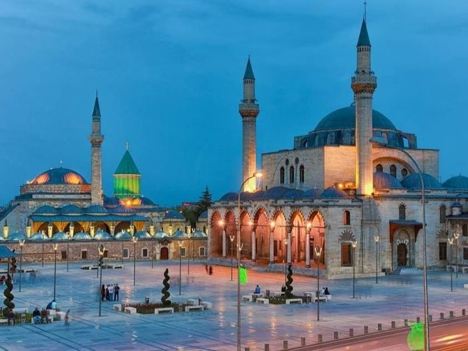
Mevlana Museum
The Mevlana Museum, also known as the Mausoleum of Rumi, is a significant tourist attraction in Konya. It houses the tomb of the revered Sufi mystic Rumi and features a museum displaying various artifacts from his life and era. Visitors can explore ancient manuscripts, hand-written copies of the Quran, musical instruments from Rumi's time, and art pieces dating back to the Seljuk era.

Selimiye Mosque
The Selimiye Mosque stands as a testament to Ottoman architectural brilliance and serves as a significant religious landmark in Konya. Constructed between 1558 and 1570 under the direction of Sultan Selim II, this magnificent mosque showcases the genius of renowned architect Mimar Sinan. Its impressive dome, soaring minarets, and exquisite calligraphy reflect classic Ottoman design elements that captivate visitors.
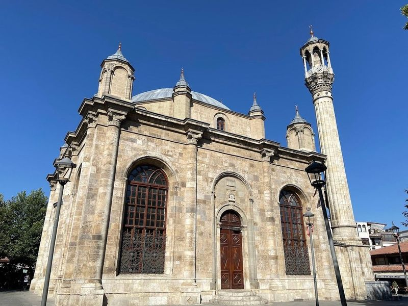
Azizia Mosque
Azizia Mosque, located in Konya, Turkey, is a example of Ottoman and baroque architecture. Construction began in 1676 AD, making it one of the city's historical landmarks. The mosque features intricate motifs and colorful Ottoman inscriptions, along with a beautiful tall minaret. Adjacent to a bustling market selling Turkish and Ottoman arts, it offers visitors an immersive cultural experience.
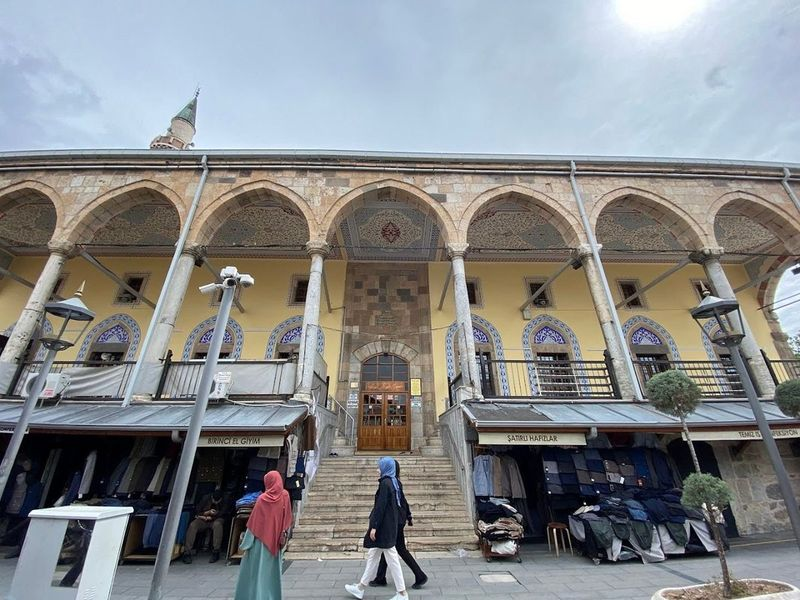
Kapu Mosque
Kapu Mosque, located in Konya, is a historical and culturally significant site that offers an exceptional experience for visitors. The mosque's extraordinary architecture, including elegant minarets and an impressive dome, showcases intricate details that contribute to its captivating beauty. As one of the oldest mosques in Konya, it stands out for being situated in a market area and offering a serene atmosphere inside.
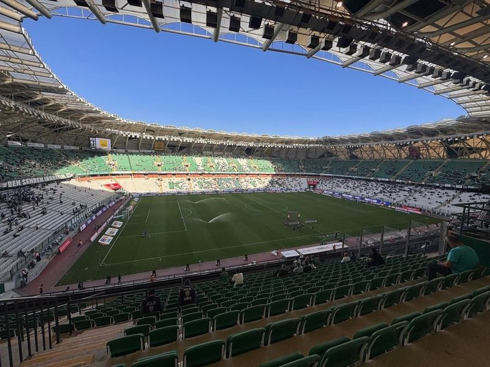
Konya Büyükşehir Arena
Konya Büyükşehir Arena is a stadium located in Turkey, known for hosting numerous national and international football matches. The stadium offers a beautiful football field and has a medium capacity. Visitors can enjoy the spacious car park as well as amenities such as restaurants and a gym with an excellent view of the pitch. The arena is well-maintained and regarded by sports enthusiasts, offering a fantastic ambiance for watching games.
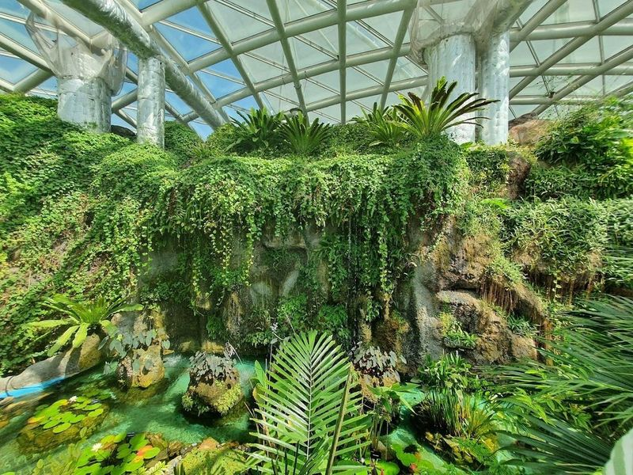
Konya Tropical Butterfly Garden
The Konya Tropical Butterfly Garden is a captivating destination featuring exotic plants, butterflies, and an insect museum. Situated adjacent to the Selcuklu Flower Garden and the Adventure Tower, this expansive urban park boasts a butterfly-shaped building with a glass roof covering 7,600 square meters.
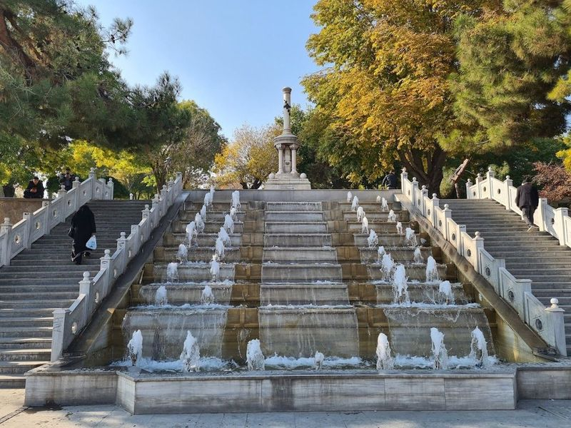
Alaaddin Hill Park
Alaaddin Hill Park in Konya is a serene and historic site, offering a perfect spot for picnics with its walking paths, benches, gardens, and trees. The park was built by the Seljuk Sultan Alaaddin Keykubat and now serves as a peaceful green space in the heart of the city. Visitors can explore the Alaaddin Mosque and remnants of an old palace while enjoying the lush surroundings.
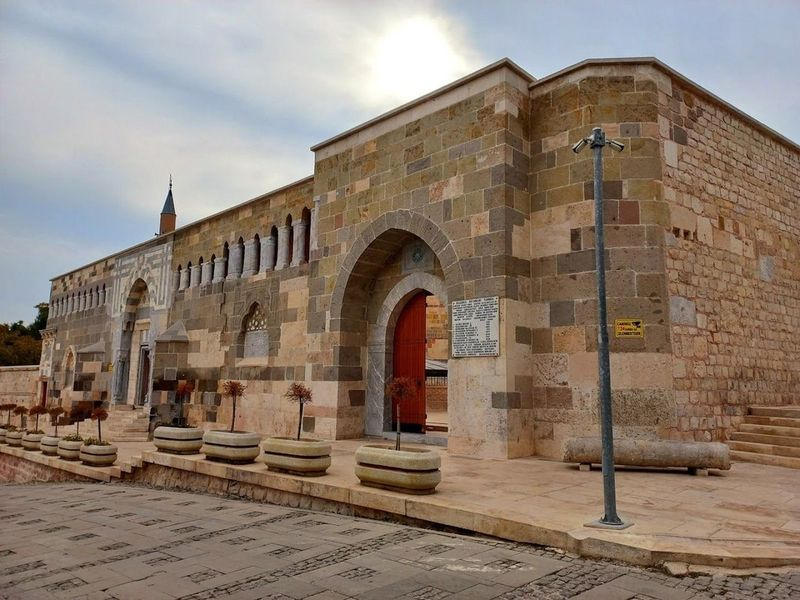
Alaaddin Keykubad Mosque
The Alaaddin Keykubad Mosque is a grand 13th-century mosque located in Konya's citadel, featuring dynastic tombs and an adjacent flower garden. The mosque boasts a beautiful ebony pulpit and delicate prayer-niche dating back to 1155, with the complex being completed in 1221. It offers a peaceful atmosphere and interesting history, situated in a park that is perfect for leisurely walks.
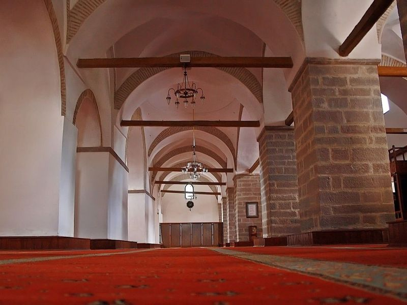
Iplikci Mosque
Iplikci Mosque, an ancient mosque dating back to the 13th century, underwent restoration around 50 years ago and continues to be a place of worship. It stands as a remarkable example of Seljuk architecture in Konya, conveniently situated between the city center and the Mevlana Museum. The mosque is one of the oldest in Turkey, built during the time of the Seljuks who introduced Turkic culture and Islam to Anatolia.
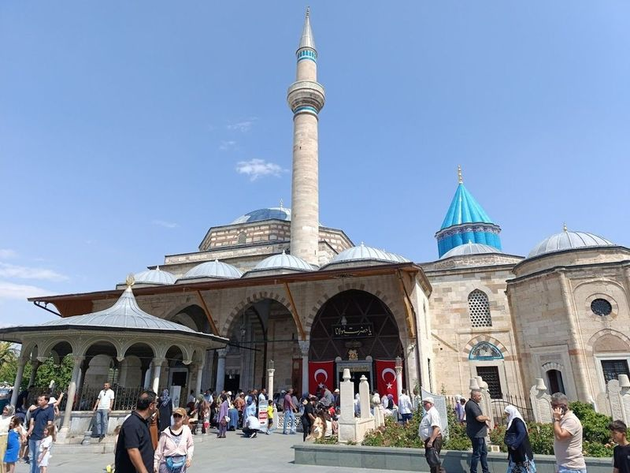
Sırçalı Medrese
Nestled in the heart of Konya, Turkey, Sırçalı Medrese is a captivating historical Islamic school that dates back to the 13th century. Constructed in 1242 under the Seljuk Sultan Kaykaus II, this architectural gem showcases exquisite glazed brick and tile decorations that reflect the artistry of its time. Originally founded by Bedreddin Muslih, it served as a center for learning Hanafi fiqh and tafsir during both Seljuk and Ottoman periods.
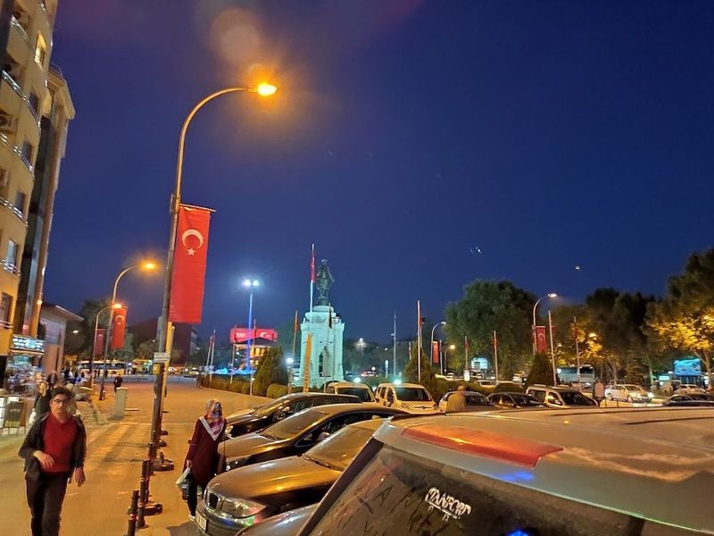
Atatürk Monument
The Atatürk Monument, erected in 1926, commemorates Turkey's first president and is situated on an impressive stone platform. Adjacent to a notable school, the monument boasts remarkable architecture that makes it a worthwhile stop for visitors. Its beauty and significance make it a cool and lovely attraction that shouldn't be missed.
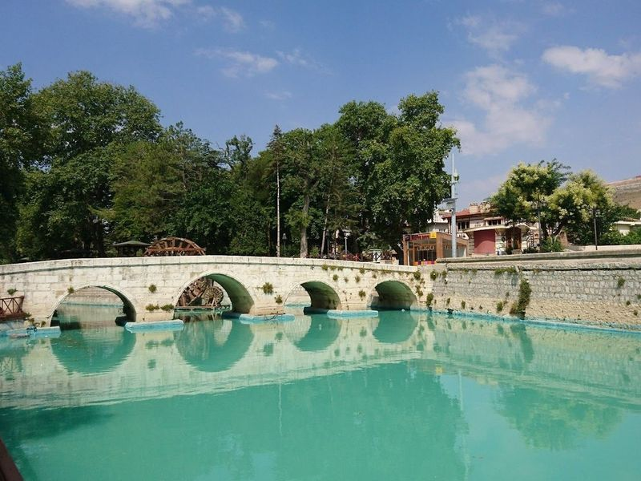
KONYA MERAM BAĞLARI
Konya Meram Baglari is a top tourist spot in Konya, offering families a chance to enjoy the outdoors. The park features winding paths lined with lush trees, serene ponds, and inviting seating areas. Once neglected, it has been transformed into a peaceful haven by the municipality. While it can get busy on weekends, it remains an excellent choice for picnics and leisurely strolls.
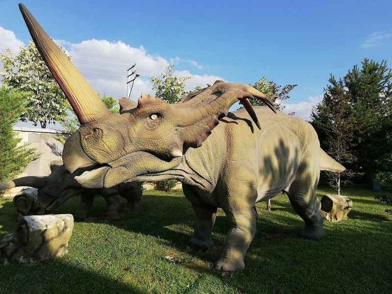
Around the World in 80 Days Park
Around the World in 80 Thousand Park is a landscaped park that features replicas of dinosaurs, fairy tale characters, and historical miniatures. It offers something for everyone of all ages, including miniature mosques, life-sized superhero figures like Hulk and Superman, and a cafeteria with affordable prices. At just 10TL (70 euro cents) for entrance fee, it’s an excellent value for money.